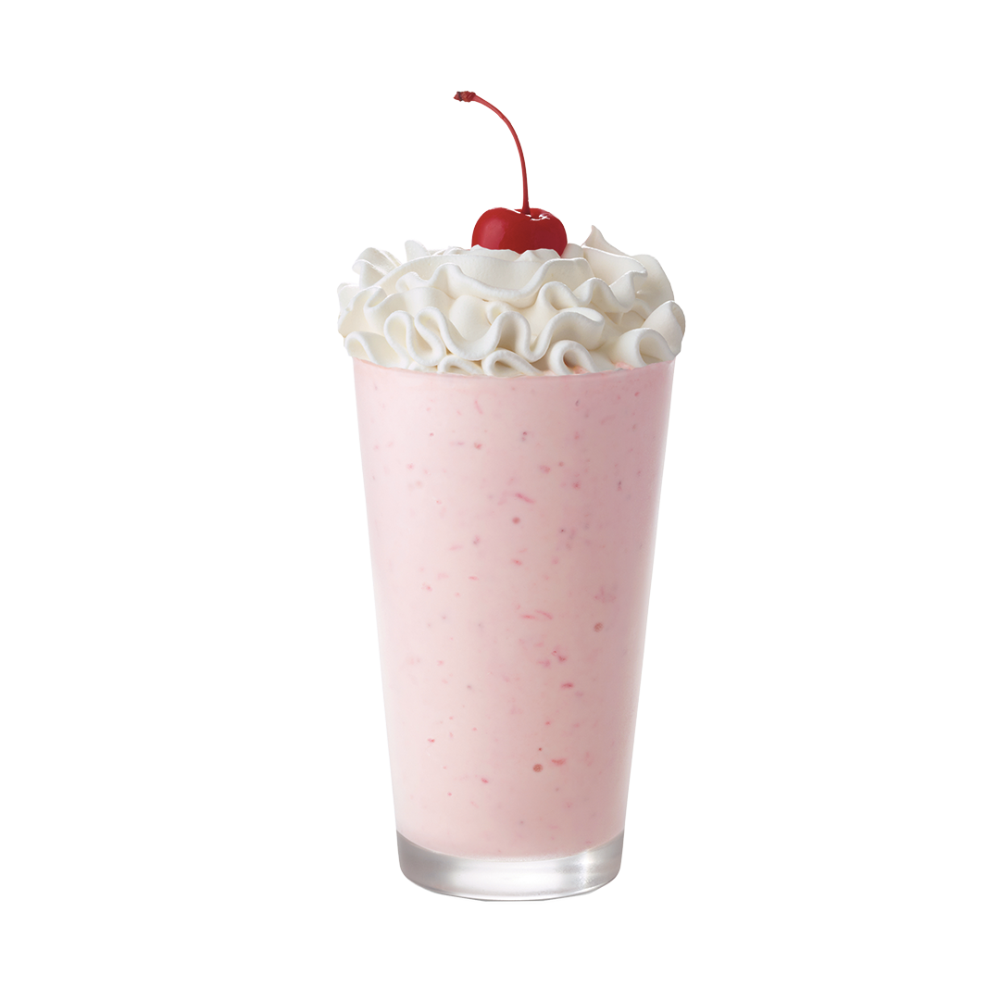
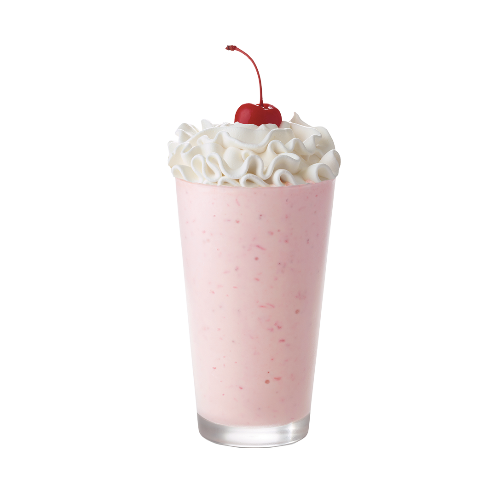

Buffalo Wild Wings
Buffalo Wild Wings is located in the Elliot University Center (EUC) food court. Their specialties include wings, burgers, and wraps! They are open from 10:30am to 6:00pm every Monday-Thursday and 10:30am to 3:00pm on Friday. And they are also closed on the weekends.


 
